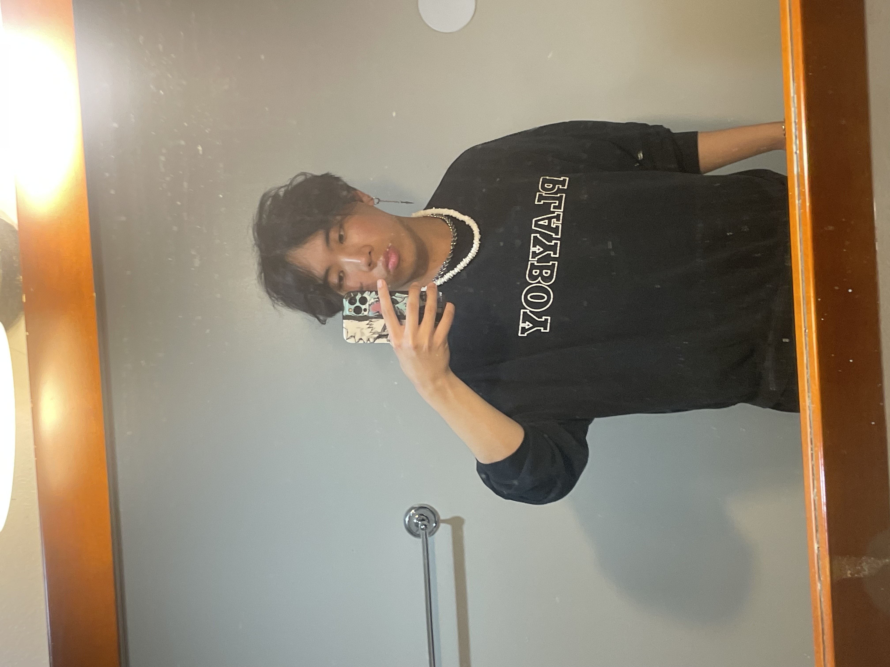

<!DOCTYPE html>
<html lang="en">
    <head>
        <meta charset="UTF-8">
        <meta name="viewport" content="width=device-width, initial-scale=1.0">
        <title>Richard's Website</title>
        <link href="https://cdn.jsdelivr.net/npm/bootstrap@5.3.3/dist/css/bootstrap.min.css" rel="stylesheet" integrity="sha384-QWTKZyjpPEjISv5WaRU9OFeRpok6YctnYmDr5pNlyT2bRjXh0JMhjY6hW+ALEwIH" crossorigin="anonymous">
    <link href="style.css" rel="stylesheet"/>
    </head>
    <body>
        <header>
    <nav class="navbar">
        <a class="nav-link active" href="index.html">About Me</a>
        <a class="nav-link" href="my-work.html">My Work</a>
        <a class="nav-link" href="experience.html">Experience</a>
        <a class="nav-link" href="testimonials.html">Testimonials</a>
        <a class="nav-link" href="contact.html">Contact</a>
    </nav>
</header>
        <main class="m-3">
            <h1>About Me</h1>
            <p>Hello! My name is Richard Huynh, and I am a junior at the University of Wisconsin-Madison, where I am pursuing a major in Information Science with a minor in Digital Studies. Through my coursework, I've developed a strong foundation in how people interact with information, technology, and digital platforms, and I am excited to continue building my skills in areas such as IT, web development, and web design. My long-term goal after college is to pursue a career where I can combine technical problem-solving with creativitywhether that's through designing user-friendly websites, developing digital solutions, or supporting organizations through IT systems and services.</p>


            <p>Outside of academics, I'm passionate about music and fitness. I enjoy DJing, going to concerts, and discovering new artists, which allows me to stay connected to creativity and culture. I also dedicate time to the gym, where I've learned discipline, consistency, and goal-settingvalues I carry into my academic and professional life. I am motivated to keep growing my technical expertise and look forward to applying my skills in a professional setting where I can contribute, learn, and make a positive impact.</p>
            
            <h2>My Skills and Tools</h2>
            <dl>
                <dt>Web Development</dt>
                <dd>HTML5, CSS3, JavaScript, and modern frameworks like <a href="https://getbootstrap.com/" target="_blank" rel="noopener">Bootstrap</a></dd>
                
                <dt>Design Tools</dt>
                <dd>Proficient in <a href="https://www.figma.com/" target="_blank" rel="noopener">Figma</a> for UI/UX design and prototyping</dd>
                
                <dt>Technical Skills</dt>
                <dd>IT troubleshooting, system administration, and user support</dd>
            </dl>

            
        </main>
    </body>
</html>